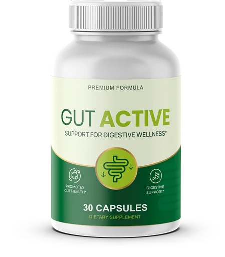

Digestive health
The "fiber gap": why so many adults feel heavy and sluggish, and the simple morning habit that may help
Most Americans don't eat enough fiber. Here's what research says about fiber, prebiotics and probiotics for regularity, and one easy way people are adding them to their mornings.
If your mornings start slow, your stomach feels heavy after meals, or "staying regular" has become something you think about more than you'd like, you're far from alone.
For many adults, these everyday complaints share a surprisingly simple root cause. It has nothing to do with willpower and everything to do with what's missing from the modern plate.
Sound familiar?
- A heavy, bloated feeling after ordinary meals
- Bathroom visits that are irregular or uncomfortable
- Mornings that feel sluggish before the day has started
- "Eating healthier" without noticing much difference
The overlooked culprit: the fiber gap
The Dietary Guidelines for Americans list dietary fiber as a nutrient of public health concern, because most people simply don't get enough of it. Processed foods, busy schedules and smaller appetites as we age all make the gap wider.
That matters because fiber does a lot of quiet work in the digestive tract.
How soluble fiber works in the gut
- 1 Absorbs waterSoluble fibers draw in water as they move through the gut.
- 2 Forms a soft gelThe gel helps stool stay soft and move more comfortably.
- 3 Feeds good bacteriaSome fibers act as prebiotics, food for beneficial gut bacteria.
When fiber is low, digestion often slows down. Closing the fiber gap is one of the most practical, well-studied ways to support regularity and everyday gut comfort.
What the research says
Researchers have studied fiber and probiotics for decades. Here are peer-reviewed studies on the same types of ingredients discussed below.
Fiber increased stool frequency
A meta-analysis of randomized trials found that dietary fiber intake clearly increased stool frequency in people with constipation.1
World Journal of Gastroenterology, 2012
Psyllium outperformed a common stool softener
In a randomized, double-blind study of adults with chronic constipation, psyllium increased stool water content and bowel movement frequency more than docusate sodium.2
Alimentary Pharmacology & Therapeutics, 1998
Dried plums improved spontaneous bowel movements
In a randomized crossover trial, dried plums (prunes) improved complete spontaneous bowel movements and stool consistency compared with psyllium.3
Alimentary Pharmacology & Therapeutics, 2011
Glucomannan supported bowel movements
In a placebo-controlled trial in constipated adults, adding konjac glucomannan to a low-fiber diet increased bowel movement frequency and improved markers of colonic ecology.4
Journal of the American College of Nutrition, 2008
Probiotics improved gut transit
A meta-analysis of randomized trials found that probiotics, as a group, improved whole-gut transit time, stool frequency and consistency in adults with functional constipation, with effects that varied by strain.5
The American Journal of Clinical Nutrition, 2014
A simpler way to close the gap
Changing your whole diet overnight isn't realistic for most people. That's why some are turning to a daily fiber-and-probiotic supplement as one simple habit.

Gut Active is a dietary supplement that combines five natural fibers with a live probiotic in a single daily capsule.
It's designed to support healthy digestion, gut comfort and regularity, without powders to mix or complicated schedules.
What's inside each capsule
- Psyllium huskPlantago ovata
A well-known soluble fiber - Oat bran powderAvena sativa
A fiber-rich whole-grain ingredient - Apple pectinMalus spp.
A soluble fiber naturally found in apples - GlucomannanAmorphophallus konjac, stem/root
A soluble fiber from the konjac plant - Plum fruitPrunus domestica
Traditionally used to support regularity - Lactobacillus acidophilusA live probiotic, 1.5 billion CFU per serving
The studies above evaluated these types of ingredients individually, often at different amounts than those in Gut Active. They did not evaluate Gut Active itself. Ingredient information is provided by the manufacturer.
How it fits into your morning
| Supply | 30 capsules per bottle (30 days) |
| Made in | Manufactured and packaged in the USA |
| Price | From $49 per bottle (6-bottle package, $294 total). 3 bottles: $207 total. 2 bottles: $158 total. |
| Shipping | Free shipping on the 3- and 6-bottle packages; shipping fees apply to the 2-bottle package (shipping policy) |
Every order is backed by the manufacturer's 60-Day Satisfaction Promise. If it isn't right for you, their support team handles returns and refunds (refund policy).
Results vary from person to person. If you take medication or have a medical condition, talk to your doctor before starting any supplement; fiber can affect how some medications are absorbed.
Watch the Gut Active presentationSee how the morning routine works and current package pricesOpens the official presentation page with video.

Advertising disclosure: This page is an advertorial (paid advertisement) for Gut Active, a product sold and fulfilled by its manufacturer through BuyGoods. Best Health Advice may receive a commission if you purchase through links on this page, at no extra cost to you. This content is for informational purposes only and is not medical advice. Illustrations are for explanatory purposes.
These statements have not been evaluated by the Food and Drug Administration. This product is not intended to diagnose, treat, cure, or prevent any disease. Individual results may vary.
References
- Yang J, Wang HP, Zhou L, Xu CF. Effect of dietary fiber on constipation: a meta analysis. World J Gastroenterol. 2012;18(48):7378-7383. doi:10.3748/wjg.v18.i48.7378
- McRorie JW, Daggy BP, Morel JG, et al. Psyllium is superior to docusate sodium for treatment of chronic constipation. Aliment Pharmacol Ther. 1998;12(5):491-497. doi:10.1046/j.1365-2036.1998.00336.x
- Attaluri A, Donahoe R, Valestin J, Brown K, Rao SSC. Randomised clinical trial: dried plums (prunes) vs. psyllium for constipation. Aliment Pharmacol Ther. 2011;33(7):822-828. doi:10.1111/j.1365-2036.2011.04594.x
- Chen HL, Cheng HC, Wu WT, Liu YJ, Liu SY. Supplementation of konjac glucomannan into a low-fiber Chinese diet promoted bowel movement and improved colonic ecology in constipated adults: a placebo-controlled, diet-controlled trial. J Am Coll Nutr. 2008;27(1):102-108. doi:10.1080/07315724.2008.10719681
- Dimidi E, Christodoulides S, Fragkos KC, Scott SM, Whelan K. The effect of probiotics on functional constipation in adults: a systematic review and meta-analysis of randomized controlled trials. Am J Clin Nutr. 2014;100(4):1075-1084. doi:10.3945/ajcn.114.089151